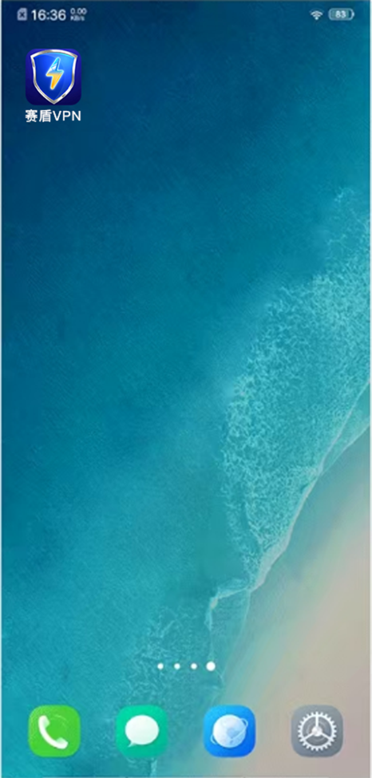

返回
欢迎查看常见问题
智慧服务，让您使用更简单

关闭 Vivo 高耗电限制让赛盾 VPN 不会中断
Vivo 手机有一个高耗电限制，他会主动终止赛盾VPN 的运行，需要关闭他就能顺畅使用了
Vivo 手机存在“杀后台”的现象，这是为了给您的手机节省电量。他会自动探知哪个 App 的耗电量较高，然后会直接终止他的运行。
对于 赛盾VPN 来说，您所有的数据都需要经过我们的加密处理后发送给我们的服务器去做安全保护和绕开本国网络策略限制等操作。这样，我们一定属于您手机中的“高耗电”应用。所以您使用中的现象是，刚开始好用，但是随着时间推移，您可能刚启动 赛盾VPN 后切换到其他 App 查看内容10 秒内就发现网络不通了。
解决这个问题很简单，只需要完成下面两步操作：
在您的手机中“锁定”赛盾 VPN App，在您的多任务管理界面中下拉一下 赛盾 VPN 的界面即可;
在电池设置当中，将“赛盾 VPN”设定为允许高耗电情况下运行
若您希望了解一些更详细的操作步骤，我们下面为您准备了 Vivo Funtouch 9.0/4.0 两个 U版本下的具体设定方式。若您不是这两个版本，操作方式应该是非常类似的，您可以尝试看一下，
若您是其他品牌的手机，请您参考《每隔几分钟就不好用了，赛盾 VPN 太不稳定了?》文章的说明。
锁定“赛盾 VPN”APP

上图的操作步骤是:
点击手机左下角的菜单键，若您是全面屏手机请从屏幕底部中间上滑打开最近任务界面:找到“赛盾 VPN”这个 App;在界面向下拉一下，您会在“赛盾 VPN”界面的右上角看到一个锁定的锁头标记!
这样的设定就可以了。
关闭“耗电保护”的选项
上面的操作步骤是：
进入手机“设置”App 当中:
·进入“应用管理”栏目，在 App 的列表中选择“赛盾 VPN” App 进行详细设定
默认这里的选项应该是关闭的，请点击一下打开他;
注:若您在下载和使用过程中有任何问题，您随时可以发送邮件给 {{kfEmail}}，将由专业的客户服务人员帮助您获取到最新版本的软件。